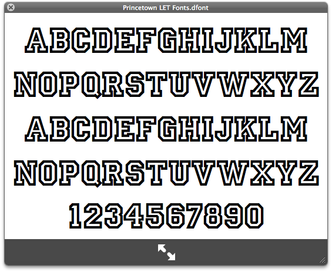
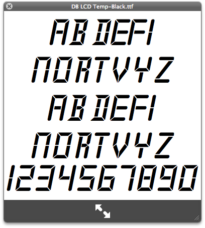

Over the course of a variety of design projects (websites, logos, slide shows, posters, etc.) I have slowly and proudly expanded my font collection beyond what is included by default in Mac OS X. For example, while working at an Authorized Apple Service Provider, I acquired one of my most prized possessions, the Myriad Pro set. It's Apple's corporate font, used for most of their logos and website headings, etc., and it's really friggin' nice. Of course, I thought it would just be a cool font I could design with once in a while, or no more than a typography nerd's piece of elitist paraphernalia. I never thought it would make a difference, say, browsing the web, because designers know it isn't installed by default on any major operating system.
But, as it turns out, I was wrong. The folks at ZURB created an awesome looking sliding vinyl demo using CSS 3, which I happened upon the other day while reading my RSS feeds. Lo and behold, there it was. In the <h1>, Myriad Pro in all of it's glory, with a CSS gradient mask and text-shadow to boot. What a nice surprise! They must have known 99.99% of their visitors would not have seen the font, rendering in Helvetica instead -- maybe they just liked the way it looked in their own browsers? In any case, it made me smile.
The moral of the story is: having extra fonts on your computer makes almost no difference at all, and if you aren't the type of person who would be made happy by a pretty font (i.e., if you aren't a typography nerd, i.e., if you can't tell the difference between Arial and Helvetica), then I would advise against it, as having too many fonts slows down your computer. Moving on.
As it turns out, there are a whole host of fonts that, for the above reason, are available to certain applications on Mac OS X, but not actually installed into the system-wide font library. I discovered this while looking for Palatino, which I knew was installed somewhere, but couldn't find in my system fonts. I opened up Terminal.app, ran a simple locate -i palatino, and found exactly what I was looking for. This, however, opened up a whole new dimension to my search: hidden fonts in Mac OS X.
These little treats are literally littered all around the OS. To install them (as with all font files), you just double click on the icons, and Font Book will open up, with a dialogue asking you if you to confirm the installation.
If you have iWork installed, then in /Library/Application Support/Apple/Fonts/iWork, you will find lots of cool fonts that aren't normally available to the rest of the OS. These include:

Similarly, if you have iLife installed, there are a bunch of fonts that come with iDVD, not available to the rest of the system. These are in /Applications/iDVD.app/Contents/Resources/Fonts (Ctrl-Click on iDVD.app and select "Show Package Contents" to get there).
Eight different versions of Lucida come with your standard installation of Java, but can only be found by going to /System/Library/Frameworks/JavaVM.framework/Home/lib/fonts/ (again, with the "Show Package Contents" trick).
A font called Matrix Ticker is available in the ESPN widget, which is installed by default. It's at /Library/Widgets/ESPN.wdgt/ESPNTicker.dfont.
Another two widget fonts, found inside the Unit Converter widget, are at /Library/Widgets/Unit Converter.wdgt/DB LCD Temp-Black.ttf and/Library/Widgets/Unit Converter.wdgt/UC-LCD.ttf. These are pretty cool, mimicking the look of a seven-segment display.

That's all I have for now. Let me know in the comments if there are others you have discovered. The more fonts, the better! (Hey, if I'm going to have a mindless consumer attitude towards something, it might as well be something that takes up no physical space and uses no natural resources, right?)